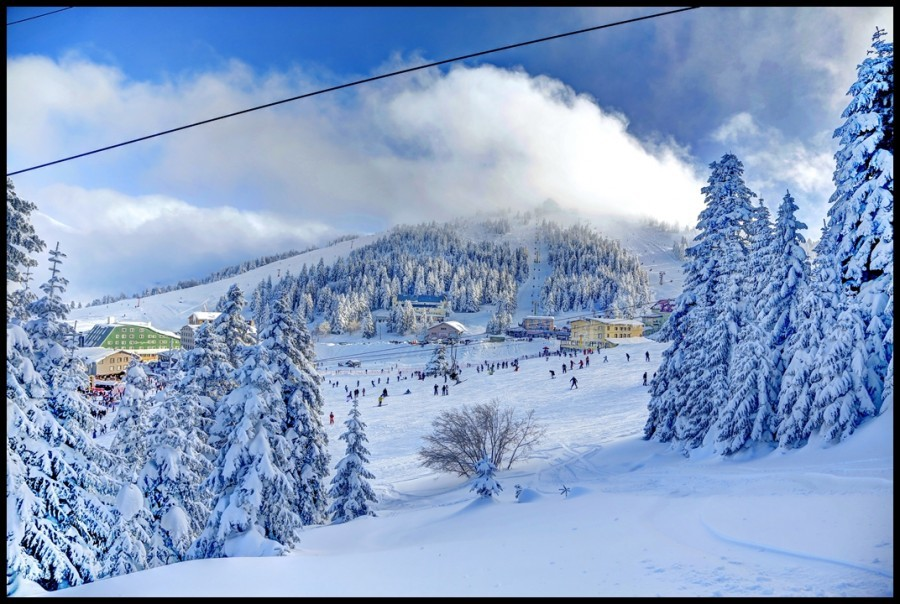
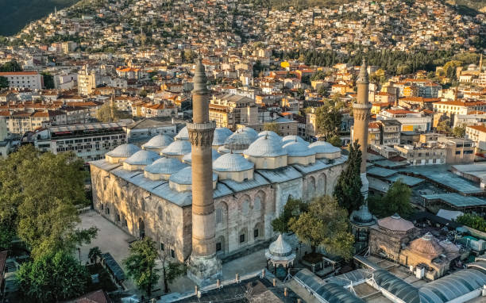
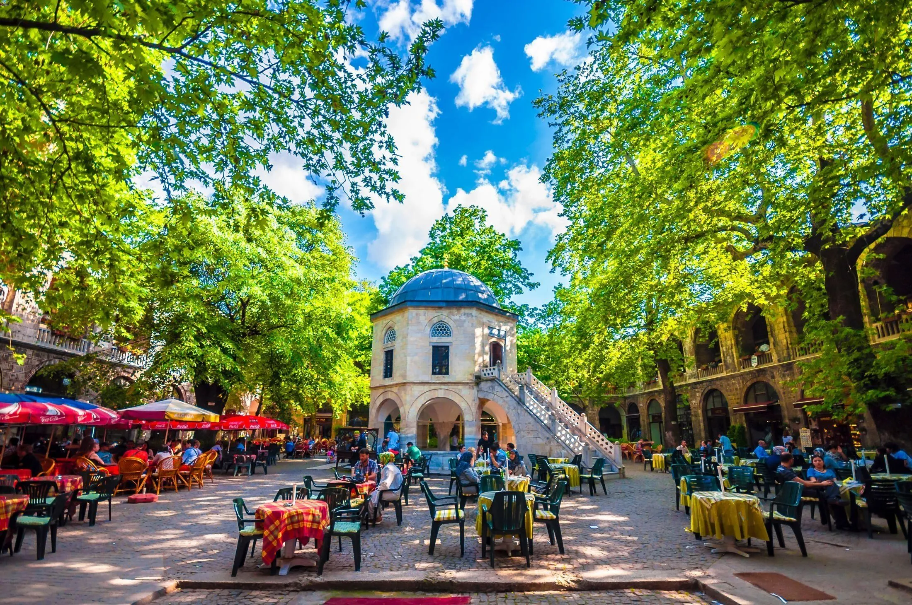

Bursa Hakkında
Bursa, Türkiye'nin Marmara Bölgesi'nde yer alan, tarihi ve kültürel zenginlikleriyle bilinen bir şehirdir. Uludağ, Bursa'nın en yüksek dağı olup kış sporlarıyla ünlüdür. Ayrıca Osmanlı İmparatorluğu'nun ilk başkenti olan Bursa, tarihi camiler, köprüler ve hamamlarla doludur.
Bursa'da Ziyaret Edilmesi Gereken Başlıca Yerler:
- Uludağ: Kış sporları, doğa yürüyüşleri ve muazzam manzaralarıyla ünlü bir dağ.
- Bursa Ulu Camii: Osmanlı dönemi mimarisinin en güzel örneklerinden biri.
- Yeşil Camii ve Türbesi: Bursa'nın simgelerinden, zarif ve etkileyici bir yapı.
- Koza Han: Osmanlı dönemine ait tarihi bir çarşı, ipek ürünleriyle ünlüdür.
- Tophane Parkı: Bursa'nın tarihi manzarasını izleyebileceğiniz huzurlu bir park.
Bursa'nın Mutfağı
Bursa, İskender kebabı ve kemalpaşa tatlısı gibi lezzetleriyle ünlüdür. Ayrıca çörek ve pideler gibi yöresel tatları da mutlaka denemelisiniz.
Ana Sayfaya Geri Dön